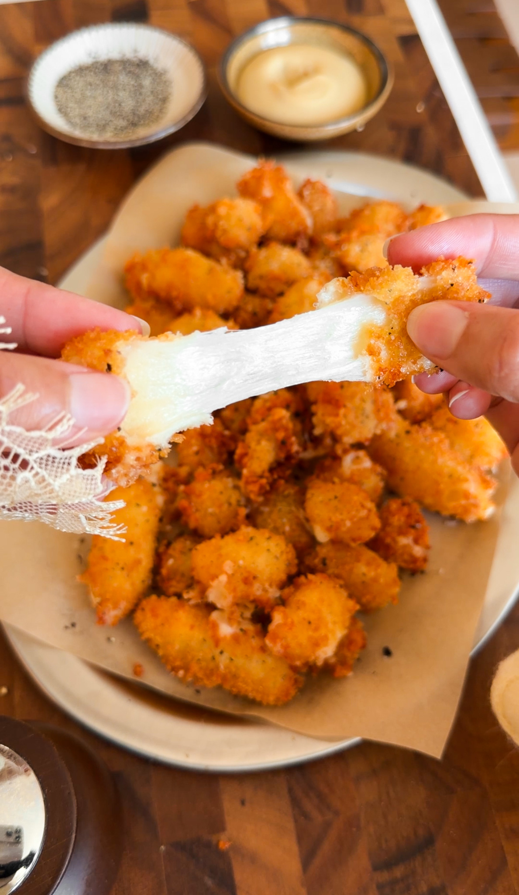
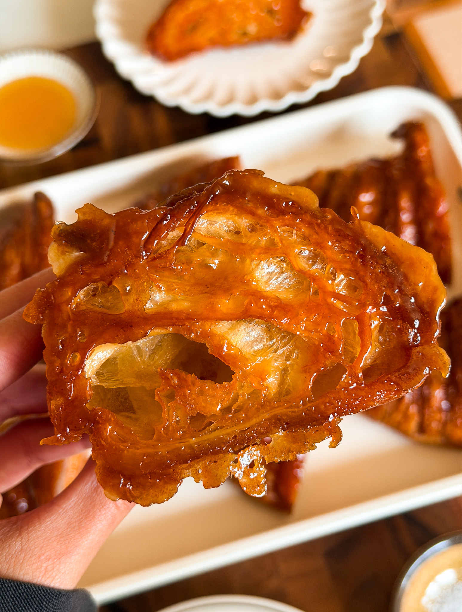

My Favorite Recipes
Fried Cheese curds
Total Time 1 hour and 30
minutes
Makes 4 servings
Author Hajar Larbah

Ingredients
- 2 large eggs
- 2 tablespoons milk
- 1/4 teaspoon salt
- 4 teaspoon black pepper
- 1/4 teaspoon garlic powder
- 1/2 cup all-purpose flour
- 1 cup panko breadcrumbs
- 12 ounces cheese curds
- vegetable oil, for frying
Instructions
- Spread the cheese curds out in a single layer on a parchment-lined baking sheet.
- Freeze for 30 minutes to 1 hour, until firm to the touch. Keep them in the freezer until you're ready to bread them.
- In a shallow bowl, whisk together the flour, salt, black pepper, and garlic powder for the dry coating.
- In a second deeper bowl, whisk together the eggs, milk, salt, black pepper, and garlic powder until smooth.
- In a third shallow bowl, stir together the panko breadcrumbs, salt, and black pepper.
- Working with a few curds at a time straight from the freezer, toss them in the dry coating until fully covered, shaking off any excess.
- Dip the coated curds into the wet batter, then use a fork to transfer them into the panko mixture, letting any excess batter drip off first.
- Press gently to coat all sides evenly in the panko.
- Place the breaded curds back onto the parchment-lined baking sheet and repeat with the remaining curds. Freeze for an additional 10 minutes to help the coating set.
- In a large, heavy-bottomed pot, heat 3 to 4 inches of vegetable oil over medium heat until it reaches 350°F.
- Working in small batches, fry the breaded curds for 2 to 3 minutes, until deep golden brown, using a slotted spoon to turn them as needed.
- Transfer the fried curds to a wire rack set over a tray to drain.
- Let cool slightly, then enjoy warm.
Corn Dogs
Total Time40 minutes
Makes 6 servings
Author Hajar Larbah

Ingredients
- 1 cup all-purpose flour
- 3/4 cup yellow cornmeal
- 2 tablespoons granulated white sugar
- 1 1/2 teaspoons baking powder
- 1/2 teaspoon baking soda
- 3/4 teaspoon salt
- 1 large egg
- 1 tablespoon honey
- 2 tablespoons unsalted butter, melted
- 1 cup buttermilk, cold
- 2 tablespoons cornstarch
- tablespoons all-purpose flour
- tablespoons all-purpose flour
- Neutral oil, for frying
- Ketchup
- Mustard
Instructions
- Pat the hot dogs dry with a paper towel.
- Insert a skewer or wooden stick into each hot dog lengthwise, leaving enough to hold onto.
- If using the optional coating, mix the cornstarch and flour together on a small tray — you want it long enough to fit the whole hot dog. Roll each one in the mixture and shake off any excess. This helps the batter stick.
- In a large bowl, whisk together the flour, cornmeal, sugar, baking powder, baking soda, and salt.
- Add the egg, honey, and cold buttermilk and stir until just combined.
- Stir in the melted butter.
- Pour the batter into a tall glass or jar for easy dipping. Let it rest for 5 minutes.
- Heat neutral oil in a deep pot to 325°F. You want enough oil to fully submerge the corn dogs. If the oil is too hot, the outside will brown before the batter is cooked through in the center.
- Working one at a time, dip a hot dog into the batter by the stick. While still holding the stick, submerge it in the oil and hold it there for about 10 seconds until the batter firms up, then release. This prevents it from sinking to the bottom and losing its coating. You can also use tongs to help lower it in if the hot oil.
- Fry for 3 to 4 minutes, turning occasionally, until deep golden brown all over.
- Remove with tongs and drain on a wire rack
- Repeat with remaining corn dogs, making sure the oil comes back to 325°F between batches.
- Serve immediately with ketchup and mustard on the side.
Caramelized Honey Butter Croissants
Total Time 30
minutes
Makes 12 servings
Author Hajar Larbah

Ingredients
- 6 croissants, cut in half
- 3/4 cup unsalted butter, melted
- 1/4 cup honey
- 1/2 cup light brown sugar
- 1 teaspoon vanilla extract
- 1/4 teaspoon salt
Instructions
- Preheat the oven to 350°F.
- In a medium bowl, add the hot melted butter, honey, brown sugar, vanilla extract, and salt.
- Whisk well until smooth, glossy, and fully combined.
- Dip the cut side of each croissant half into the honey butter mixture, coating it evenly.
- Place each croissant half cut side down directly onto a non-stick baking sheet.
- Once all the croissants are on the tray, use a pastry brush to lightly brush a little more of the honey butter around each one. Don't put a lot or it will be too sweet.
- Bake for 15 to 18 minutes, until deeply golden and caramelized on the cut side.
- Once out of the oven, the butter and sugar will have spread across the tray and will be very hot. Carefully handle each croissant and gently swirl it around in the melted mixture to separate it from the tray and pick up a bit more of the caramelized coating.
- Let cool cut side down on the tray for 10 to 15 minutes to allow the coating to firm up before removing and enjoying.